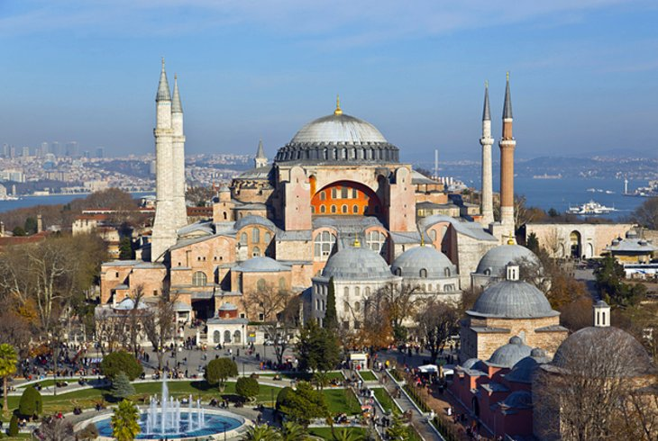
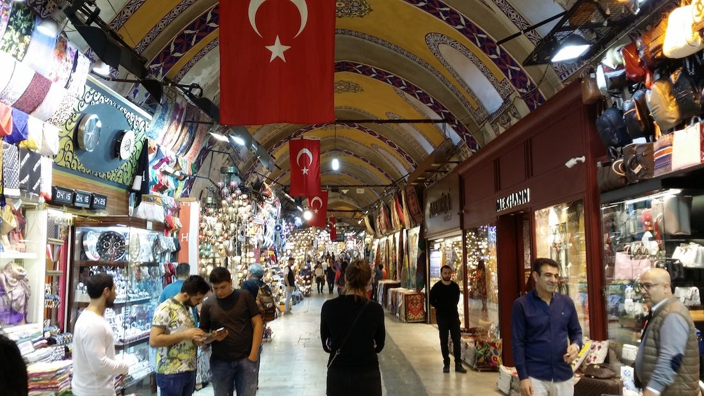

خطة يوم واحد في اسطنبول
مسجد ايا صوفيا

في الصباح يمكنك الذهاب الى ايا صوفيا و تأمل الشعائر الدينية والتفكر في التاريخ العثماني وكذلك يمكن الذهاب الى المسجد الازرق الذي بجانبه.
جراند بازار

من بعد ذلك تذهب الى الجراند بازار (السوق الكبير ) وهو من اهم معالم اسطنبول السياحية تم بنائه في عهد السلطان محمد الأول وتوسعته في عهد سليمان القانوني وهو سوق شعبي مسقوف به محلات متنوعة من مجوهرات واكسسوارات وأدوات منزلية وتأكد من الأسعار لدى اكثر من محل حتى لاتتعرض للنصب ويمكنك المفاصلة في الاسعار.
زورلو مول
 زورلو مول هو احد ارقى واحدث المجمعات التجارية في اسطنبول ويحتوي على جميع الماركات العالمية والتركية كذلك يمكنك الاستمتاع به مع عائلتك.
زورلو مول هو احد ارقى واحدث المجمعات التجارية في اسطنبول ويحتوي على جميع الماركات العالمية والتركية كذلك يمكنك الاستمتاع به مع عائلتك.
شارع تقسيم
 تحتوي منطقة تقسيم على شارع الاستقلال وهو شارع من أشهر شورارع أسطنبول، يزوره يومياً ما يقارب ثلاثة ملايين شخص، طولة تقريبا ثلاثة كيلومتر، ويحتوي الكثير من المباني الأثرية ومحلات ملابس ومعارض ومكتبات وسينمات وملاهي الليلية، كما يخترقه مترو قديم أقيم منذ العهد العثماني.
تحتوي منطقة تقسيم على شارع الاستقلال وهو شارع من أشهر شورارع أسطنبول، يزوره يومياً ما يقارب ثلاثة ملايين شخص، طولة تقريبا ثلاثة كيلومتر، ويحتوي الكثير من المباني الأثرية ومحلات ملابس ومعارض ومكتبات وسينمات وملاهي الليلية، كما يخترقه مترو قديم أقيم منذ العهد العثماني.